Results
results.rmd
suppressPackageStartupMessages({
library(tidyverse)
library(lubridate)
library(ggplot2)
library(fs)
library(ggridges)
library(dplyr)
library(tsibble)
library(reshape2)
library(fable)
library(feasts)
library(urca)
})## Warning: package 'tsibble' was built under R version 4.5.2## Warning: package 'reshape2' was built under R version 4.5.2## Warning: package 'fable' was built under R version 4.5.2## Warning: package 'fabletools' was built under R version 4.5.2## Warning: package 'feasts' was built under R version 4.5.2## Warning: package 'urca' was built under R version 4.5.2
source(fs::path("..","R", "DailySummary.R"))
source(fs::path("..","R", "WeeklyMonthlyTrend.R"))
source(fs::path("..","R", "TimeSeriesDecomp.R"))
source(fs::path("..","R", "EventChains.R"))
source(fs::path("..","R", "RemoveOutliers.R"))
source(fs::path("..","R", "SAIDI.R"))
source(fs::path("..","R", "SAIFI.R"))
source(fs::path("..","R", "CAIDI.R"))
data_path <- fs::path("..","inst/extdata", "PackageData.csv")
trouble_codes_path <- fs::path("..","inst/extdata", "TroubleCodeLegend.csv")
outages_raw <- readr::read_csv(data_path, show_col_types = FALSE)
trouble_codes <- readr::read_csv(trouble_codes_path, show_col_types = FALSE)
daily_summary <- summarize_daily_outages(outages_raw)
outages <- prepare_outages(outages_raw)
outages <- outages |>
mutate(month = month(outages$STARTDATE))
monthly_summary <- summarise_monthly_outages(outages)
daily_ts <- prepare_daily_ts(outages_raw)
chains_df <- identify_event_chains(outages_raw,
min_gap = 5,
max_gap = 10)
chain_summary <- summarise_event_chains(chains_df)Daily Outage Summary
Total outages per day
plot_daily_outages(daily_summary,
start_date = as.Date("2025-06-01"),
end_date = as.Date("2025-07-01"))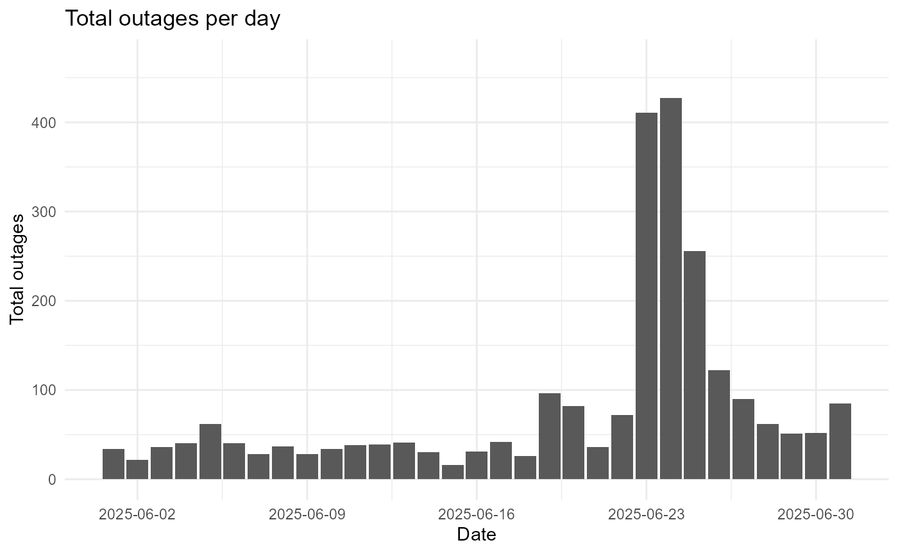
Total customers affected per day
plot_daily_customers(daily_summary,
start_date = as.Date("2024-12-01"),
end_date = as.Date("2025-01-01"))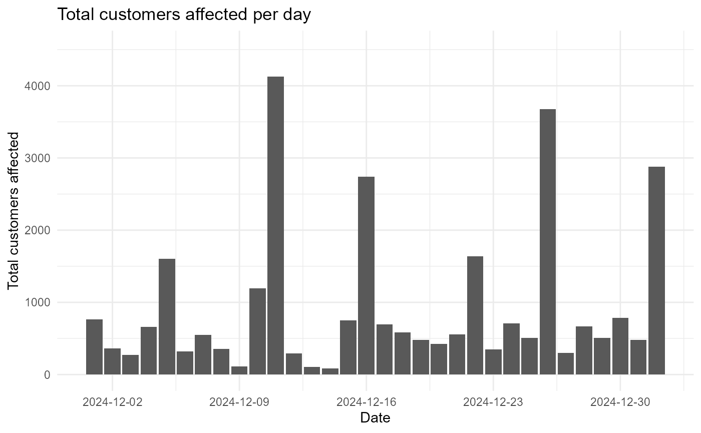
Total duration of outages per day
plot_daily_total_duration(daily_summary,
start_date = as.Date("2025-04-01"),
end_date = as.Date("2025-05-01"))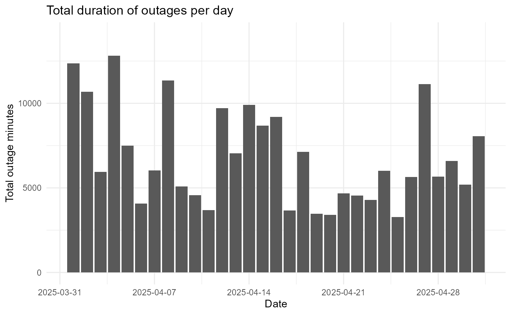
Average time to restoration
plot_daily_avg_restoration(daily_summary,
start_date = as.Date("2025-07-01"),
end_date = as.Date("2025-08-01"))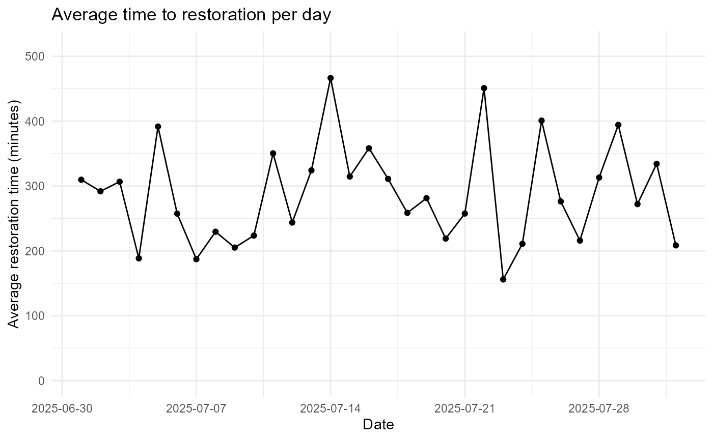
Percent of momentary events
plot_daily_pct_momentary(daily_summary,
start_date = as.Date("2025-09-01"),
end_date = as.Date("2025-10-01"))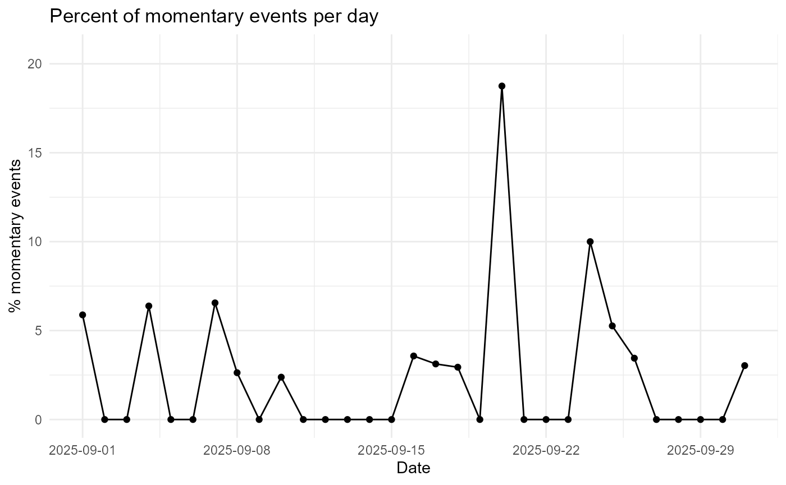
Trend Analysis
Customer-hours lost
plot_customer_hours_monthly(monthly_summary)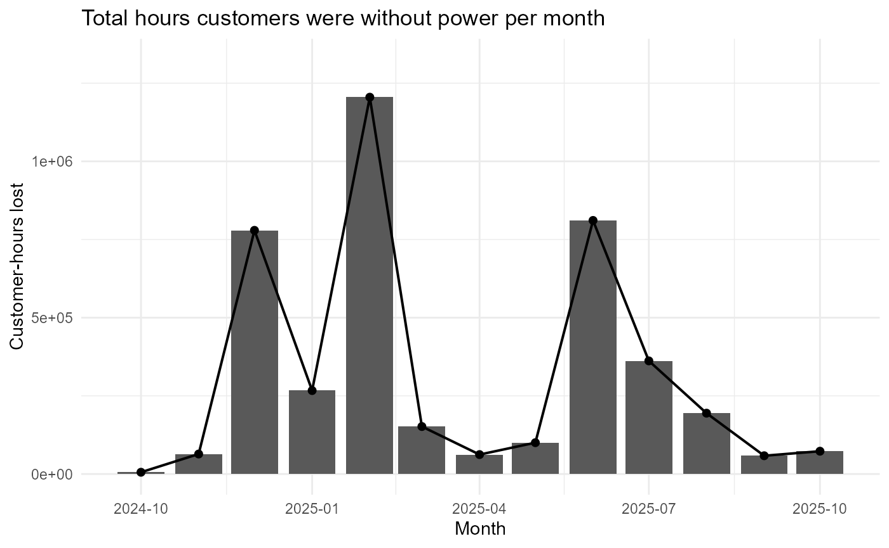
Across the daily and monthly views, the results show that most days have relatively low outage activity, but a few large spikes heavily influence the overall trends. These high-outage days also drive the monthly peaks, where certain months reach more than 2,000 outages and customer-hours lost exceed 1M. Winter and summer stand out as the busiest seasons, while spring and fall experience noticeably fewer outages.
Yearly Trend
plot_outage_trend_loess(daily_ts)## `geom_smooth()` using formula = 'y ~ x'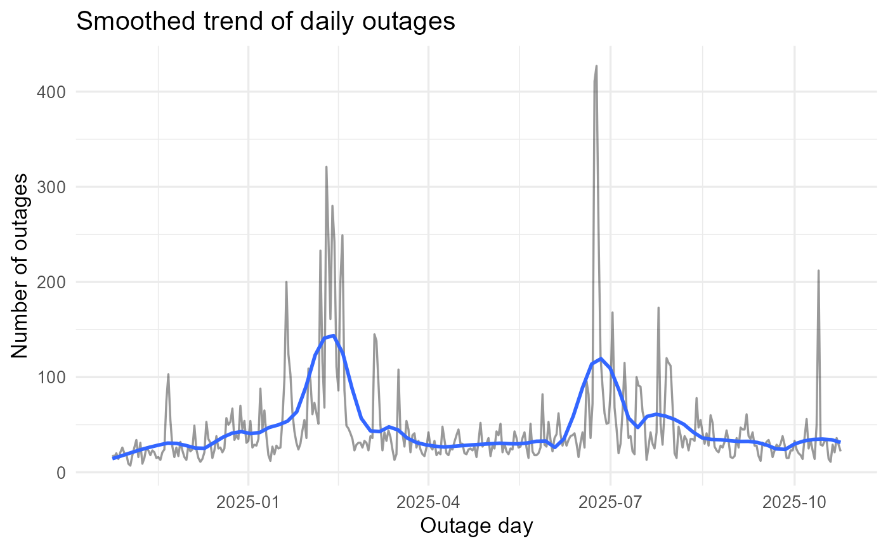
When looking at outage causes, the two major trouble codes — AMI (AMI last gasp) and SO (Side off) — account for most of the monthly variation. Both codes spike sharply in winter and again in midsummer, matching the broader seasonal patterns. The smoothed trend also highlights two main waves of outages: one in early winter and another during the summer months.Event Chains
Time-of-day pattern (When do chains happen?)
plot_chain_time_of_day(chains_df)## Warning: Removed 1 row containing missing values or values outside the scale range
## (`geom_col()`).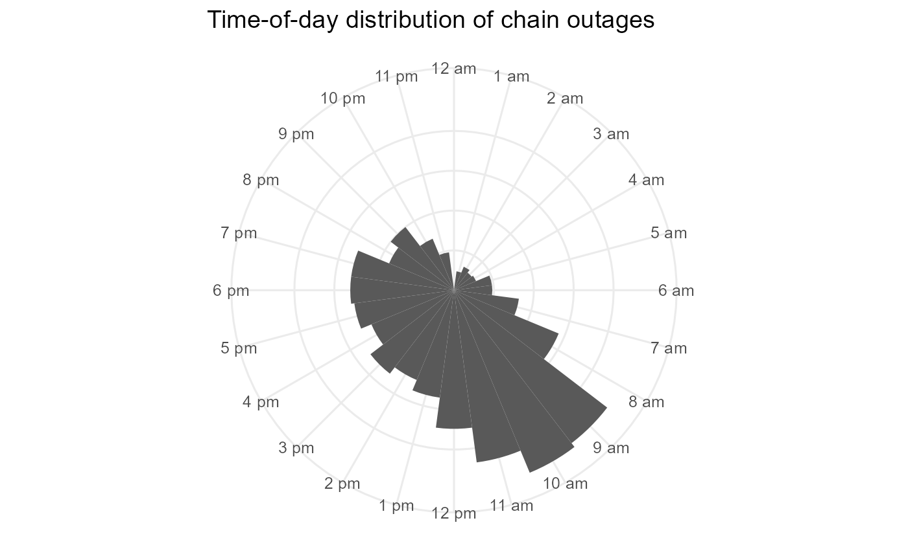
Event-chain analysis shows where outages tend to cluster within 5-10 minutes. Brooklyn, Queens, and Westchester have the most chain events, both in count and percentage, suggesting these areas see more rapid follow-on outages. Chain events also appear most often during late morning and early afternoon. Overall, the graphs show that outages follow strong seasonal patterns, and vary by location and trouble code.
Utility Metrics
System Average Interruption Duration Index (SAIDI)
SAIDI Counts per Month
outages <- outages |>
filter(XBORO != '-NDA-') |>
filter(OUTAGEFLAG == 1) |>
group_by(XBORO) |>
filter(remove_outliers(TOTALCUSTAFFECTED)) |>
ungroup()
saidi_list <- split(outages, outages$month)
SAIDI_calc_per_month <- lapply(saidi_list, function(x){
SAIDI_calc(x)
})
plot_saidi <- data.frame(
month = names(SAIDI_calc_per_month),
saidi = unlist(SAIDI_calc_per_month)
)
x_ordered <- factor(plot_saidi$month,
levels = c("1", "2", "3", "4", "5", "6", "7", "8", "9", "10", "11", "12"))
ggplot(plot_saidi, aes(x=x_ordered, y= saidi)) +
geom_point() +
labs(x = "Month", y = "SAIDI",
title = "SAIDI Calculation per Month")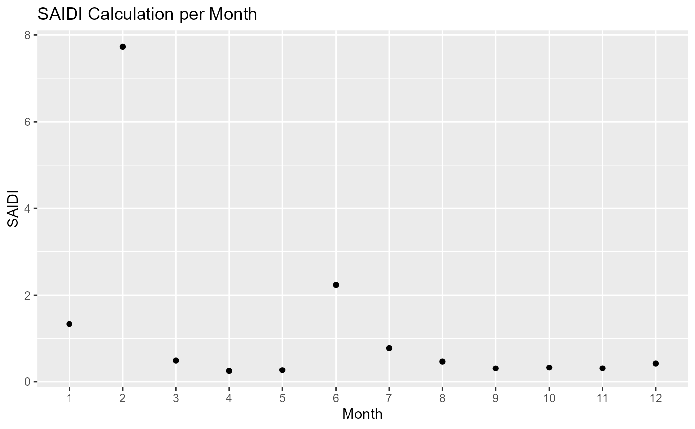
SAIDI_calc(outages)## [1] 14.94201Customer Average Interruption Duration Index (CAIDI)
CAIDI_calc(outages)## [1] 513.4571We have 3 calculations for utility metrics: CAIDI, SAIFI, and SAIDI which are all measured in minutes. We removed outliers for customers affected then calculated the SAIDI (System Average Interruption Duration Index) for each month. We can see for September 2025 the SAIDI was particularly high, meaning that the average outage duration for each customer served was .8 minutes SAIDI is usually measured over the course of the year, but it can still be interesting to see how each month contributed to the yearly calculation. In addition to this calculation, we also provide CAIDI and SAIFI, which we provide as functions.
Borough-Level Analysis
Outage Counts per Borough
ggplot(outages, aes(x=XBORO))+
geom_bar()+
labs(x="Borough", y="Count of Outages", title ="Outage Count from Oct 2024 to Oct 2025 by Borough")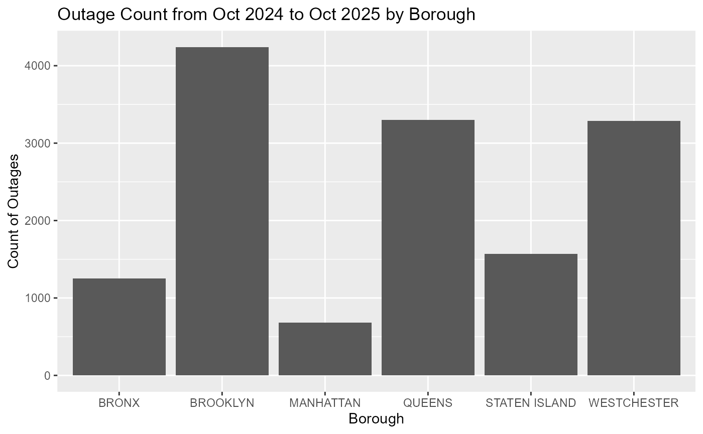
Boxplot Breakdown per Borough
outages_boro <- outages |>
mutate(
start_ts = lubridate::ymd_hms(STARTDATE, tz = "UTC"),
rest_ts = lubridate::ymd_hms(RESTDATE, tz = "UTC"),
# Use start time as the "event day" for aggregation
outage_day = as.Date(start_ts),
duration_mins = as.numeric(difftime(rest_ts, start_ts, units = "mins"))
)
quartiles <- outages_boro |>
group_by(XBORO) |>
summarise(
Q1 = quantile(duration_mins, 0.25),
Median = median(duration_mins),
Q3 = quantile(duration_mins, 0.75),
.groups = "drop"
) %>%
tidyr::pivot_longer(cols = c(Q1, Median, Q3),
names_to = "stat",
values_to = "y")
ggplot(outages_boro, aes(x = XBORO, y = duration_mins)) +
geom_boxplot(outliers = FALSE) +
labs(title="Outage Duration by Borough",
x= "Borough",
y="Duration in Minutes") +
geom_text(
data = quartiles,
aes(x = XBORO, y = y, label = round(y, 2)),
vjust = -0.5, # Adjust vertical position
color = "black",
size = 2
) +
theme(
axis.text.x = element_text(size = 8)
)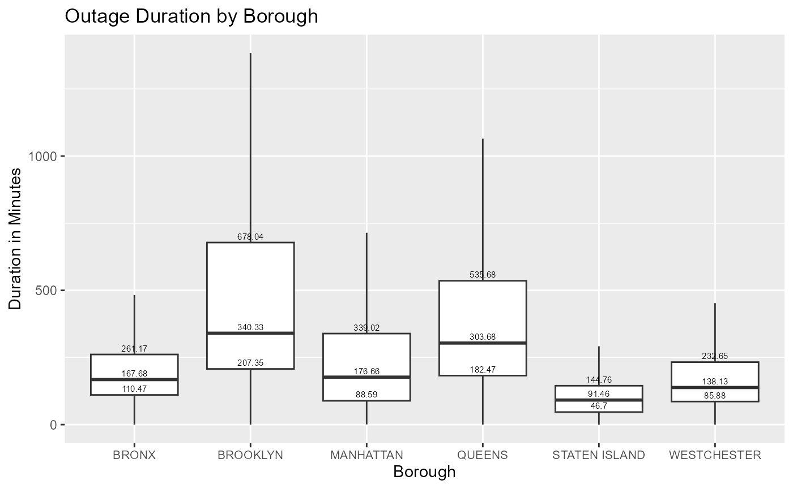
Ridgeline Plot of Outage Counts per Borough
ggplot(outages, aes(x = TOTALCUSTAFFECTED, y = XBORO)) +
geom_density_ridges(scale = 1.2, rel_min_height = 0.01, fill = "lightblue", alpha = 0.5) +
theme_ridges() +
theme(legend.position = "none") +
labs(title = "Ridgeline Plots of Total Cust Affected by Borough",
x = "Total Customers Affected",
y = "Borough")## Picking joint bandwidth of 1.7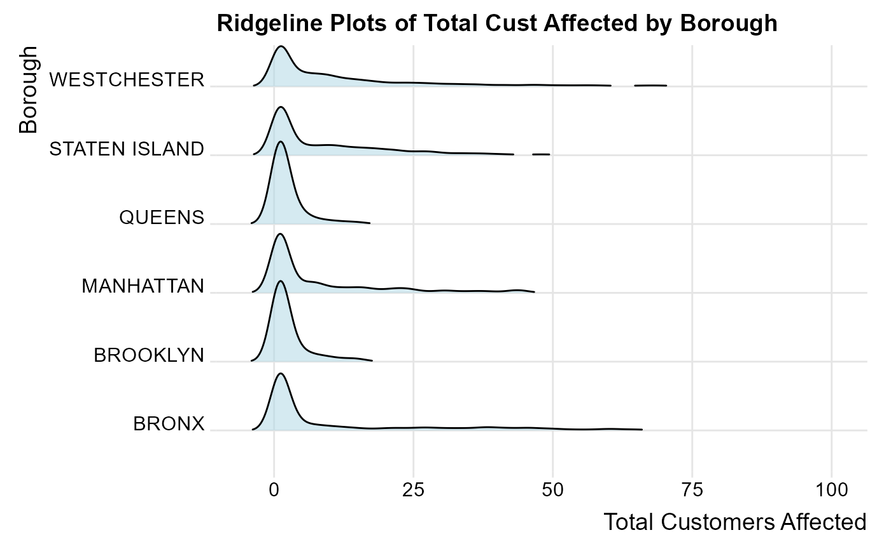
We have a couple of visuals showing trends across our 6 boroughs, including Westchester County. We provided bar graphs, a box plot, and a ridgeline plot. Across the board, we can see that Brooklyn and Queens have a higher count of outages and that the medium duration of the outages is greater too. This may be due to factors like weather and/or equipment in these boroughs that may contribute to more outages and slower restoration times.
Trouble Code Analysis
Facet Bar Graphs for Top 5 Boroughs
events_merged <- outages |>
left_join(trouble_codes, by = c("TROUBLECODE" = "SHORT_DESC"))
top_counts <- events_merged |>
filter(XBORO != '-NDA-') |>
filter(CODE_NAME != 'NA') |>
group_by(XBORO) |>
count(CODE_NAME, name = "count") |>
arrange(XBORO, desc(count), CODE_NAME) |>
slice_head(n = 5)
ggplot(top_counts, aes(x=CODE_NAME, y=count)) +
geom_bar(stat="identity") +
facet_wrap(~XBORO) +
theme(axis.text.x = element_text(angle = 90, vjust = 0.5, hjust = 1)) +
labs(title="Outage Count by Trouble Code",
subtitle = "References Top 5 Trouble Codes in each Borough",
x="Trouble Code",
y="Outage Count")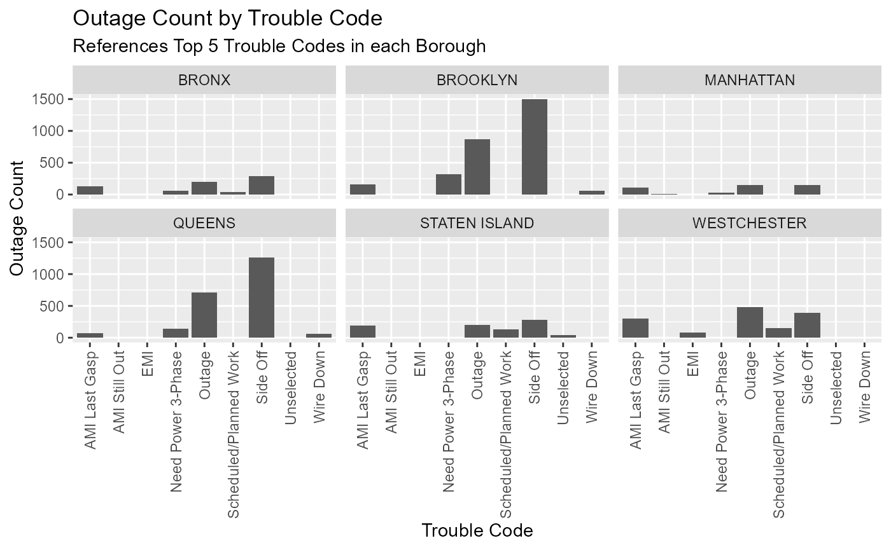
Cleveland Dot Plot
ggplot(top_counts, aes(x=count, y=CODE_NAME)) +
geom_point() +
facet_wrap(~XBORO) +
theme(axis.text.x = element_text(angle = 90, vjust = 0.5, hjust = 1)) +
labs(title="Outage Count by Trouble Code",
subtitle = "References Top 5 Trouble Codes in each Borough",
x="Trouble Code",
y="Outage Count")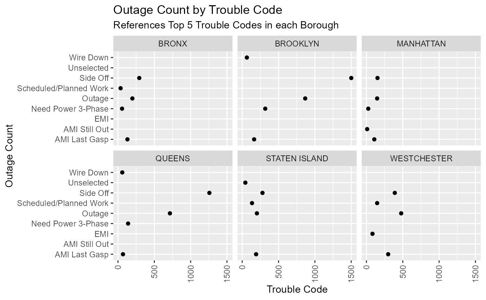
### Heat Map for Top 5 Trouble Codes per Borough
ggplot(top_counts, aes(x = CODE_NAME, y = XBORO)) +
geom_tile(aes(fill = count)) +
theme(axis.text.x = element_text(angle = 90, vjust = 0.5, hjust = 1)) +
scale_fill_continuous(high = "#132B43", low = "#56B1F7") +
labs(title = "Top Troublecode by Boroughs",
x = "Trouble Code",
y = "Borough")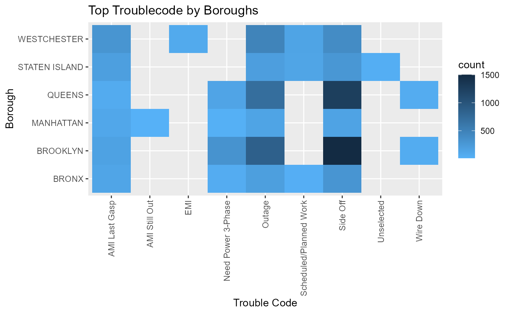
We did analysis for our trouble codes which are the clues that help operators dispatch proper resources to restore outages. We created multiple faceted plots that show the outage count for the top 5 trouble codes for each boroughs. We can see that Scheduled/Planned Work is a common trouble code across all boroughs. We also created a heat map to make trouble-code outage counts more visually appealing to the user. With the color palette that we used, we hope that users can easily determine which trouble codes are most common among the boroughs.